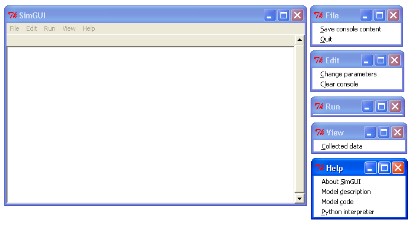
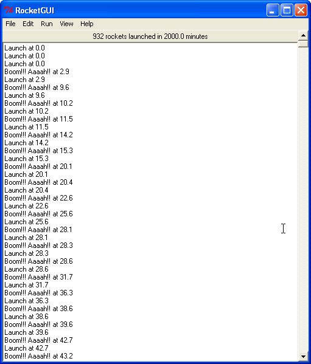
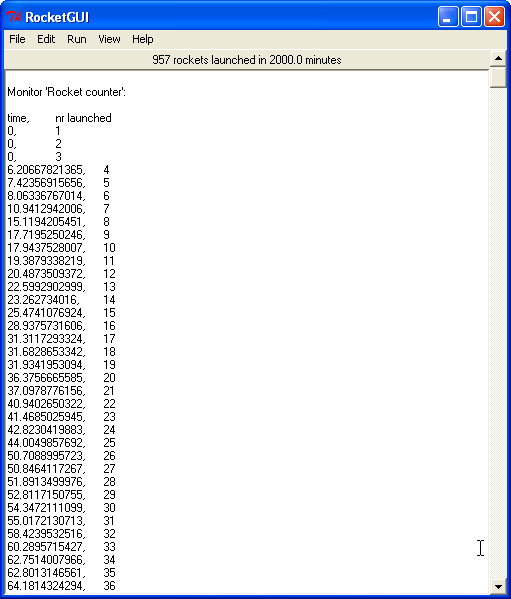

SimGUI Manual¶
- Authors
Klaus Muller <Muller@users.sourceforge.net>
- SimPy release
2.3.1
- Web-site
- Python-Version
2.6 and later
- Date
December 2011
Contents
This manual describes SimGUI, a GUI framework for SimPy simulation applications.
Acknowledgements¶
The initial ideas for using a Tk/Tkinter-based GUI for SimPy simulation models and first applications came from Mike Mellor and Prof. Simon Frost of University of California, San Diego. Simon has been a very productive co-developer of SimGUI.
Following an idea by Simon Frost, SimGUI uses a great Tkinter-based console for conversing with the Python interpreter, developed by Ka-Ping Yee <ping@lfw.org>.
Introduction¶
SimGUI is a GUI framework for SimPy simulation programs. It provides for:
a standard layout of the user interface, including its menu structure
running a simulation
viewing simulation output
saving the output to a file
changing the simulation model parameters
viewing a model description
viewing the simulation program’s code
a Python console for debugging
SimGUI is based on the Tk GUI library.
SimGUI overview¶
Here is a minimalistic program which does nothing but show the SimGUI user interface:
## SimGUIminimal.py
from SimPy.SimGUI import *
root=Tk()
gu=SimGUI(root,consoleHeight=20)
gu.mainloop()
Running it produces this output:

The large frame is the SimGUI application window. To its right are the standard menu items of SimGUI. To show them, the menus have been torn off by clicking on the dotted line on all SimGUI drop-down menu items.
The SimGUI application window consists of five widgets:
the outside frame is a Tk Toplevel widget with a default title (which can be changed),
a menu bar, a Tk Menu widget which can be adapted by the application program (contained in toplevel)
the output window, a Tk Frame widet for SimPy program output (contained in toplevel)
the status bar for one-line status messages, a Tk Label widget (contained in output window)
the output console for application output, a Tk Text widget (contained in output window)
The File sub-menu is for saving or opening files and also for quitting the application. By default, it supports saving the content of the output console.
The Edit sub-menu is for any editing or change operations. By default, it supports changing model parameters and clearing the output console.
The Run sub-menu is for running the SimPy model. By default, it is empty, as there is no model to run.
The View sub-menu is for calling up any application output, e.g. plots or statistics. By default, it has the ability to automatically show the data from any Monitor instance in the SimPy application.
The Help sub-menu is for viewing any information about SimGUI and the specific application behind it. By default, it provides information about the version of SimGUI, lists the application’s code and allows the launching of a Python console for testing and debugging purposes.
To show how simple it is to interface a model to SimGUI, here is an example with a simple simulation model:
#!/usr/bin/env python
__doc__=""" GUIdemo.py
This is a very basic model, demonstrating the ease
of interfacing to SimGUI.
"""
from __future__ import generators
from SimPy.Simulation import *
from random import *
from SimPy.SimGUI import *
class Launcher(Process):
nrLaunched=0
def launch(self):
while True:
gui.writeConsole("Launch at %.1f"%now())
Launcher.nrLaunched+=1
gui.launchmonitor.observe(Launcher.nrLaunched)
yield hold,self,uniform(1,gui.params.maxFlightTime)
gui.writeConsole("Boom!!! Aaaah!! at %.1f"%now())
def model():
gui.launchmonitor=Monitor(name="Rocket counter",
ylab="nr launched",tlab="time")
initialize()
Launcher.nrLaunched=0
for i in range(gui.params.nrLaunchers):
lau=Launcher()
activate(lau,lau.launch())
simulate(until=gui.params.duration)
gui.noRunYet=False
gui.writeStatusLine("%s rockets launched in %.1f minutes"%
(Launcher.nrLaunched,now()))
class MyGUI(SimGUI):
def __init__(self,win,**par):
SimGUI.__init__(self,win,**par)
self.run.add_command(label="Start fireworks",
command=model,underline=0)
self.params=Parameters(duration=2000,maxFlightTime=11.7,nrLaunchers=3)
root=Tk()
gui=MyGUI(root,title="RocketGUI",doc=__doc__,consoleHeight=40)
gui.mainloop()
It produces the following output when the model run command is selected:

class MyGUI adds one menu item under the Run menu. It also defines three parameters (duration, maxFlighTime and nrLaunchers) with their initial values which the user can change interactively before each run. The MyGUI instance named gui sets the window title, the model description (the __doc__ string) and the height of the output window.
The simulation part of the program writes to the output console and to the status line.
The model uses a Monitor for keeping track of the number of rockets launched over time. Because it is made an attribute of the MyGUI instance, the super class (SimGUI) can output the Monitor after a run. This requires no application code. When the menu item ‘Collected data’ under the View menu is selected, this results in:

The SimGUI API¶
Structure¶
The SimGUI module exposes the following API to the applications programmer:
class SimGUI(object)
def __init__
self.doc = doc
self.noRunYet=True
self.top = Menu
self.file = Menu
self.edit = Menu
self.run = Menu
self.view = Menu
self.help = Menu
def makeFileMenu
def makeEditMenu
def makeRunMenu
def makeViewMenu
def makeHelpMenu
def writeConsole
def saveConsole
def clearConsole
def writeStatusLine
def about
def notdone
def showTextBox
def mainloop
class Parameters
def __init__
def show
class SimGUI, __init__ constructor¶
Encapsulates the SimGUI functionality.
- Call:
<variable>.SimGUI(win[,optional parameters])
- Mandatory parameters:
win : the master widget in which the SimGUI widgets are embedded
- Optional parameters:
title=SimGUI : the title of the top level window (string)
doc=None : the model description (string)
consoleHeight=50 : the height of the output console in lines (positive integer)
- Return value:
Returns a reference to the SimGUI instance.
SimGUI instance fields¶
In addition to the constructor parameters, the SimGUI fields of interest to the applications programmer are:
self.noRunYet=True : a predicate indicating whether the model has been run yet; must be set to True after each model run; should be tested by application program before any run-dependent output is produced (boolean)
self.top = Menu : the top level menu widget (menu bar)
self.file = Menu : the ‘File’ menu widger
self.edit = Menu : the ‘Edit’ menu widget
self.run = Menu : the ‘Run’ menu widget
self.view = Menu : the ‘View’ menu widget
self.help = Menu : the ‘Help’ menu widget
writeConsole¶
Writes a string into the output console Text widget, with newline at end.
Call:
<SimGUI instance>.writeConsole(text)
- Mandatory parameters:
None.
- Optional parameters:
text=’’ : text to write (string)
- Return value:
None.
saveConsole¶
Saves output console to a text file which the user is prompted to name.
- Call:
<SimGUI instance>.saveConsole()
- Mandatory parameters:
None
- Optional parameters:
None
- Return value:
None
clearConsole¶
Clears output console.
- Call:
<SimGUI instance>.clearConsole()
- Mandatory parameters:
None
- Optional parameters:
None
- Return value:
None
writeStatusLine¶
Writes a one-line string to the status line.
Call:
<SimGUI instance>.writeStatusLine(text)
- Mandatory parameters:
None.
- Optional parameters:
text=’’ : text to write (string, not longer than 80 character)
- Return value:
None.
notdone¶
Brings up a warning box staing that a feature is not implemented yet. Useful during development of application.
Call:
<SimGUI instance>.notdone()
- Mandatory parameters:
None.
- Optional parameters:
None.
- Return value:
None.
showTextBox¶
Pops up a text box (Text widget)with a text in it.
Call:
<SimGUI instance>.showTextBox(optional parameters)
- Mandatory parameters:
None.
- Optional parameters:
title=’’ : title of text box (string)
text=’’ : text to write (string)
width=80 : width of box in characters (positive integer)
height=10 : height of box in lines (positive integer)
- Return value:
None.
mainloop¶
Starts up SimGUI execution.
- Call:
<SimGUI instance>.mainloop()
- Mandatory parameters:
None.
- Optional parameters:
None.
- Return value:
None
class Parameters, __init__ constructor and adding parameters¶
This class provides for interactive user changes of model parameters. Any user-input is checked against the type of the original (default) value of the parameter.In this version, parameters of type integer, floating point, text and list are supported. Boolean parameters can be implemented by using 0 for False and 1 for True.
- Example:
gui.params=Parameters(endtime=2000, numberCustomers=50, interval=10.0, trace=0)
This results in parameters gui.params.numberCustomers, gui.params.interval and gui.params.trace.
- Call:
<SimGUI instance>.params=Parameters(par) (constructor) <SimGUI instance>.params.<name>=<value> (adding parameters)
- Mandatory parameters:
par : one or more pairs <name>=<value>, separated by commas. <value> must be one of the four types supported.
<name> : the parameter name (any legal Python identifier)
<value> : the parameter’s initial value (must be one of the four types supported, i.e. integer/boolean, floating point, text and list)
- Optional parameters:
None.
- Return value:
A Parameter instance.
show¶
Returns the parameter name/value pairs of a Parameter instance in pretty-printed form (one pair per line).
- Call:
<Parameter instance>.show()
- Mandatory parameters:
None.
- Optional parameters:
None.
- Return value:
A string with the name/value pairs separated by newline (’n’).
Miscellaneous SimGUI capabilities¶
Source code listing¶
The ‘Model code’ item of the ‘Help’ submenu lists the application code of a running SimGUI application by outputting the content of sys.argv[0]. No user programming is required for this.
Automatic display of Monitor instances¶
After a model run, any Monitor instance which is referred to by a SimGUI (sub)class instance is shown in the output console by the ‘Collected data’ item on the ‘View’ submenu. Just e.g. gui.waitMon=Monitor(“Waiting times”), where gui refers to a SimGUI (sub)class instance, is enough to facilitate this.
$Revision: 297 $ $Date: 2009-03-31 02:24:46 +1300 (Tue, 31 Mar 2009) $ kgm